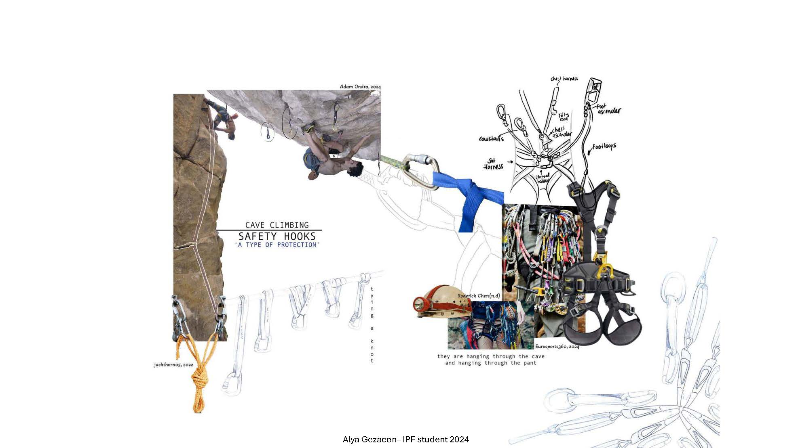
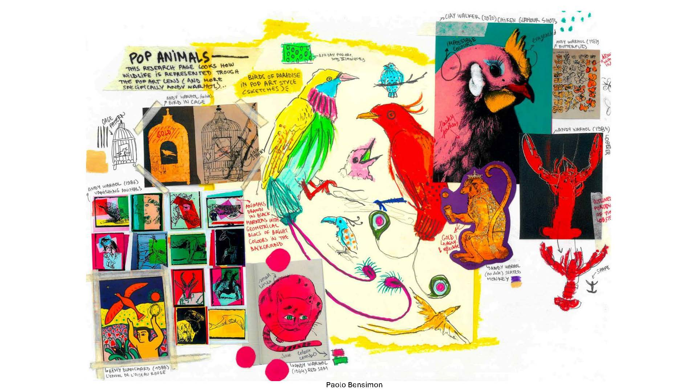
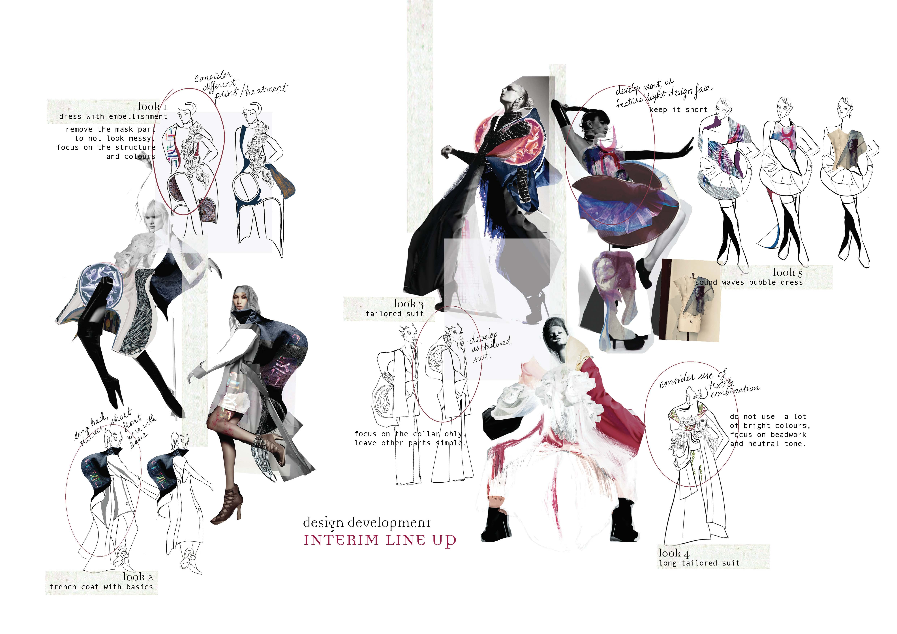
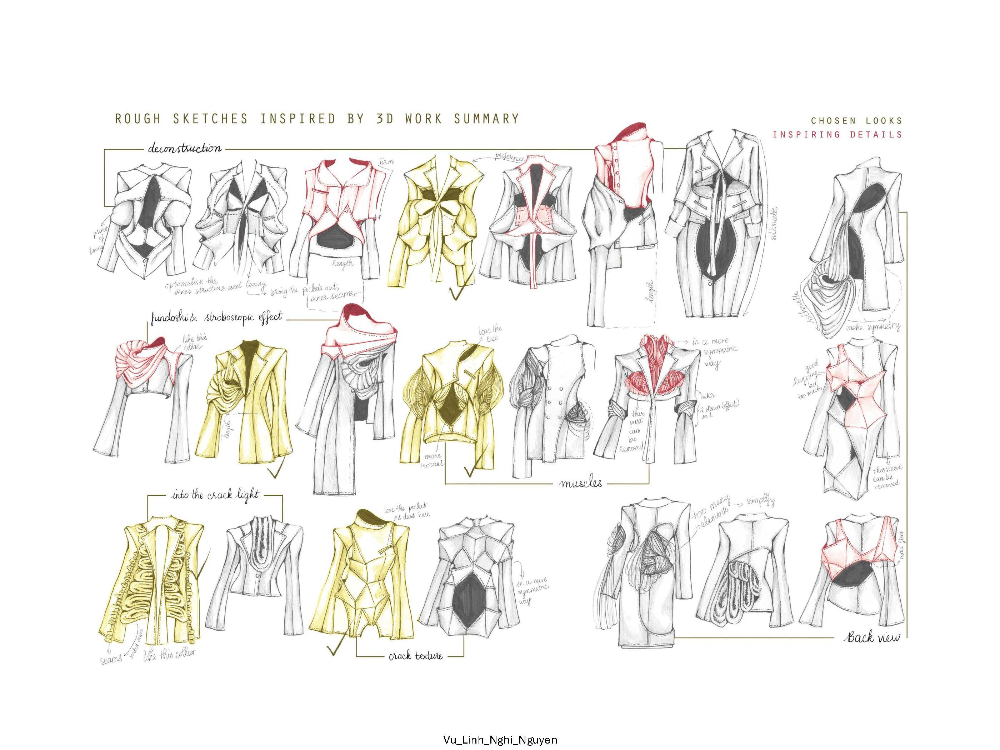
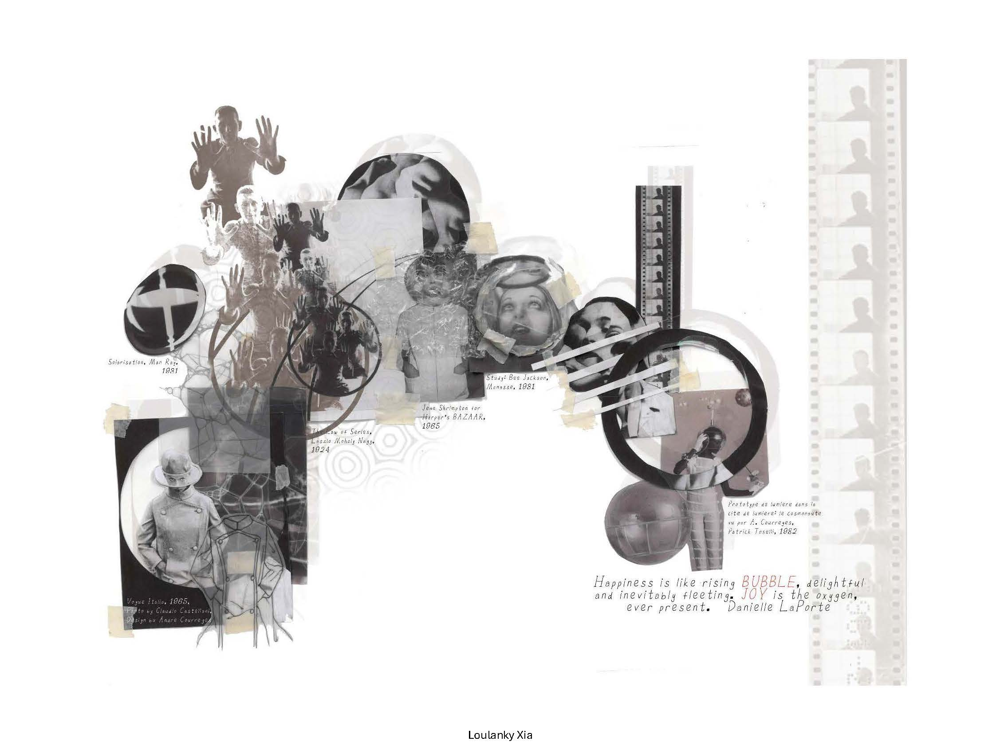
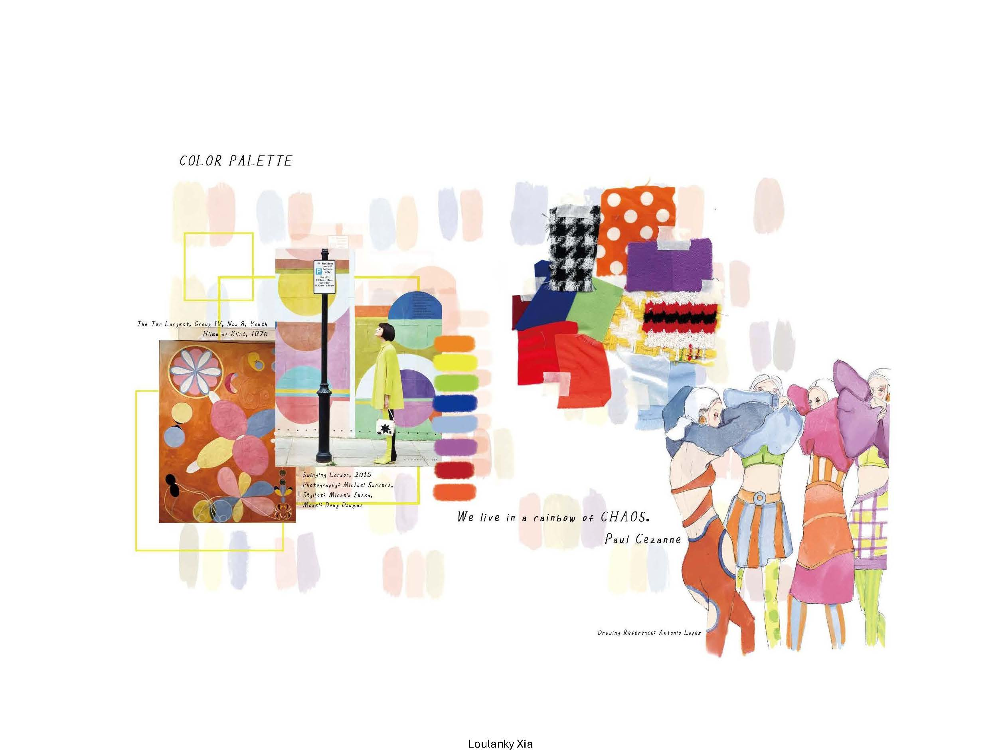
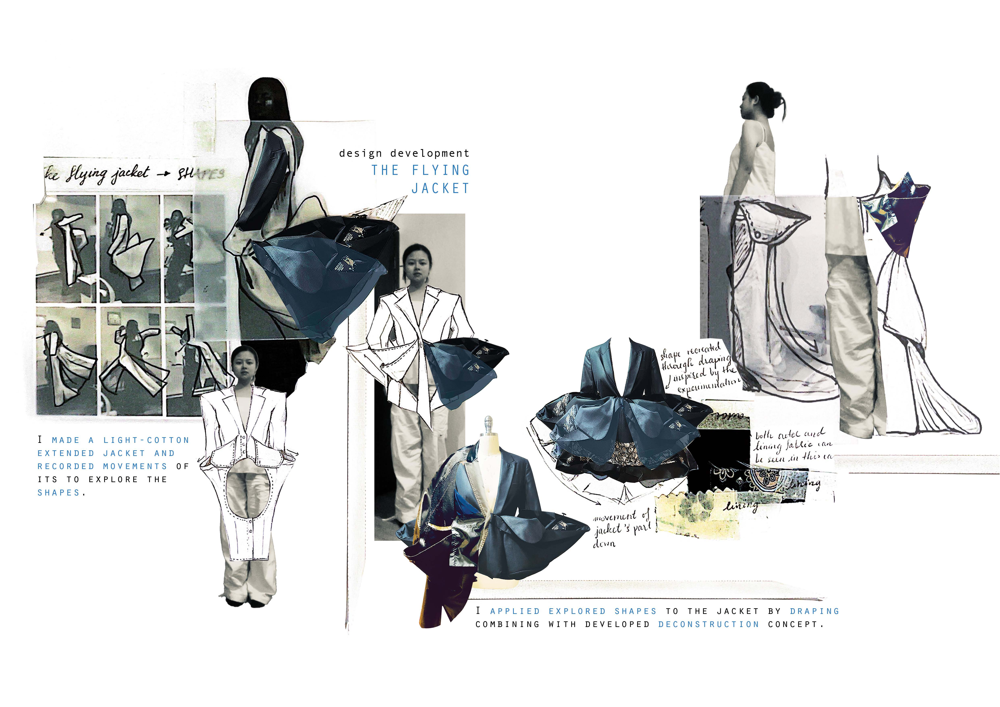
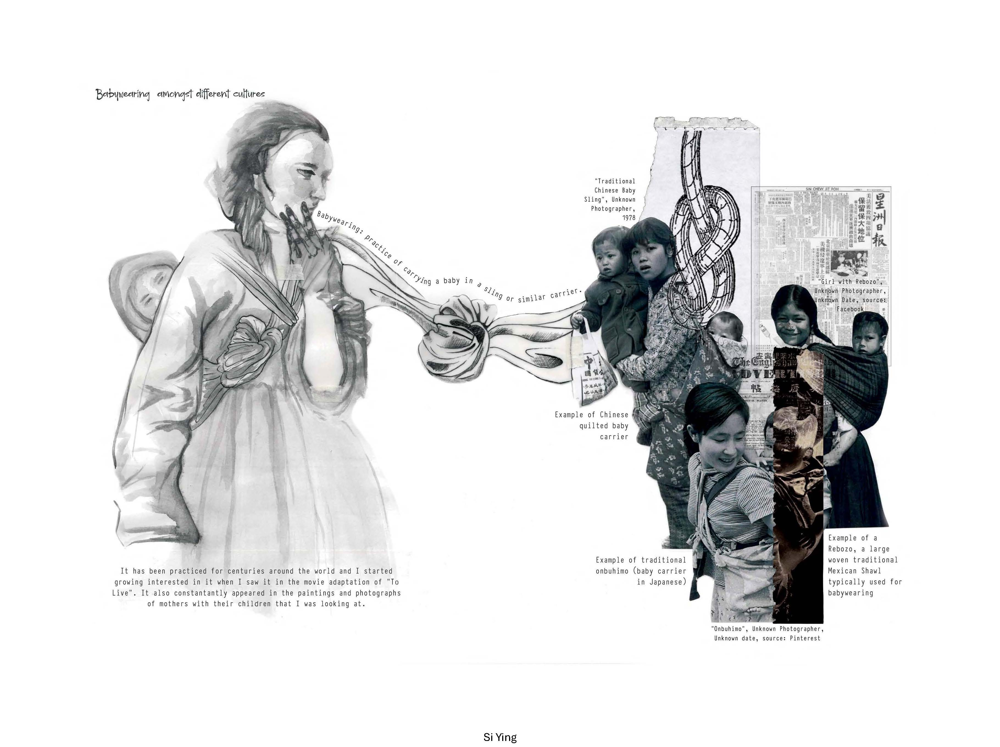

Good subheadings:
- Define what part of your research you're exploring
- Help expand creative ideas
- Include visual hierarchy
Need help? See Generative Fill Subheadings workshop

Strong research pages show:
- Different research sources
- Your own responses to what you found
- Quotes that support your ideas
Need help? See Enlarging Details & Artist Links workshop

Design development should include:
- Both 2D and 3D ideas
- A mix of whole designs and detail elements
- Research links supporting development
Need help with textures? See Monoprint workshop or Stencils & Brushes workshop

Refinement pages should show:
- A selecting and editing process
- Various similar but different ideas
- Ticks or marks to show decisions

Proper referencing includes:
- Artist name and year
- Title of work in italics
- [Image] designation
Need help adding text? See Text on Path workshop

A strong colour palette:
- Connects to your research theme
- Shows colour theory understanding
- Links to inspiration sources

Good typography:
- Body text: 12–14pt maximum, left- or right-aligned in blocks
- Subtitles: a different style (weight, font, colour) – not just bigger
- Hierarchy: contrast through weight, spacing and colour
- Consistency: ONE heading font + ONE body font
- Flow: text guides the eye, it doesn't block it
- Reflects your project theme
"If your text is shouting, your design can't breathe."
Suggested fonts: Orator ST, Andale Mono, Avenir Next Condensed, Helvetica Neue, Bodoni, Didot, Futura
Want a unique font? See Handwriting to Digital Font workshop

Strong visual elements:
- Support and enhance your content
- Are high quality
- Create visual interest
Need more visual interest?
- Pattern Brushes workshop – create visual links
- Fun Foam Printmaking – add handmade textures
- Moving Elements workshop – reposition and blend
